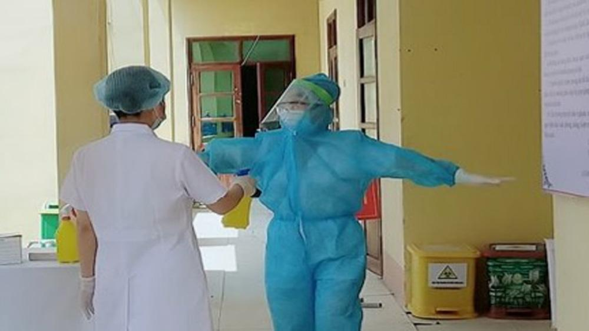

6 biện pháp cần thực hiện tại khu vực phong tỏa, cách ly y tế
(BGĐT) Dịch Covid-19 vô cùng nguy hiểm, đang là đại dịch toàn cầu. Dịch lây truyền rất nhanh qua đường hô hấp khi có sự gặp gỡ, tiếp xúc trực tiếp giữa người với người. Để ngăn chặn dịch bệnh lây lan, mỗi người dân ở trong các khu vực phong tỏa, cách ly y tế cần thực hiện nghiêm túc các biện pháp phòng, chống dịch.
|  |
Thực hiện các biện pháp phòng, chống dịch tại khu cách ly tập trung số 1 huyện Yên Thế. Ảnh Văn Thư |
{kind=link}
Hiện nay dịch Covid-19 đang có mặt và diễn biến rất phức tạp ở địa phương của chúng ta. Với tinh thần “chống dịch như chống giặc”, Ban chỉ đạo phòng chống dịch Covid - 19 tỉnh kêu gọi toàn thể nhân dân cùng tham gia chống dịch để tự bảo vệ chính mình, gia đình và cộng đồng với tinh thần “mỗi gia đình là một pháo đài, mỗi người dân là một chiến sĩ”.
Hơn lúc nào hết, đây chính là trách nhiệm của mỗi công dân và mỗi gia đình trong việc bảo vệ làng xóm, quê hương. Để ngăn chặn dịch bệnh không lây lan, đề nghị mỗi người, mỗi nhà thực hiện ngay những việc sau đây:
1. Thực hiện triệt để nhà cách ly với nhà; người nhà nào ở yên nhà ấy; không gặp gỡ tiếp xúc với ai ở bên ngoài; không đến chơi nhà ai; không cho ai vào nhà mình với tinh thần nhà nhà cửa đóng then cài. Chỉ được ra ngoài trong trường hợp thật sự cần thiết.
2. Mỗi người tự theo dõi sức khỏe hằng ngày, tự đo thân nhiệt, chủ động khai báo y tế ngay bằng điện thoại cho tổ Covid cộng đồng và cho trạm y tế xã khi trong gia đình có người biểu hiện mất khả năng ngửi; ốm mệt; dấu hiệu cảm cúm; sốt; ho; đau họng; viêm đường hô hấp hoặc các biểu hiện nghi ngờ mắc bệnh. Tuyệt đối không được dấu bệnh.
3. Chủ động, tự giác khai báo y tế ngay nếu bản thân hoặc người trong gia đình có tiếp xúc với người mắc bệnh hoặc có liên quan với các yếu tố dịch tễ nguy cơ mắc bệnh.
4. Thực hiện nghiêm chỉnh yêu cầu 5K của Bộ Y tế, đó là: đeo khẩu trang, không tụ tập, thường xuyên sát khuẩn tay; giữ khoảng cách và khai báo y tế.
5. Giữ nhà ở thông thoáng; thường xuyên vệ sinh, làm sạch nhà cửa, bề mặt vật dụng bằng các chất tẩy rửa thông thường.
6. Phối hợp và thực hiện thật tốt tất cả các hướng dẫn phòng chống dịch của chính quyền địa phương và các lực lượng chức năng, đặc biệt phối hợp thật tốt với tổ phòng chống Covid-19 cộng đồng tại khu dân cư.
Với tình yêu quê hương và tinh thần trách nhiệm của toàn thể nhân dân, chúng ta quyết tâm cùng nhau chiến thắng dịch bệnh, mang lại sự bình yên cho tất cả mọi người.
Theo Báo Bắc Giang điện tử - Ban Chỉ đạo phòng, chống dịch tỉnh Bắc Giang